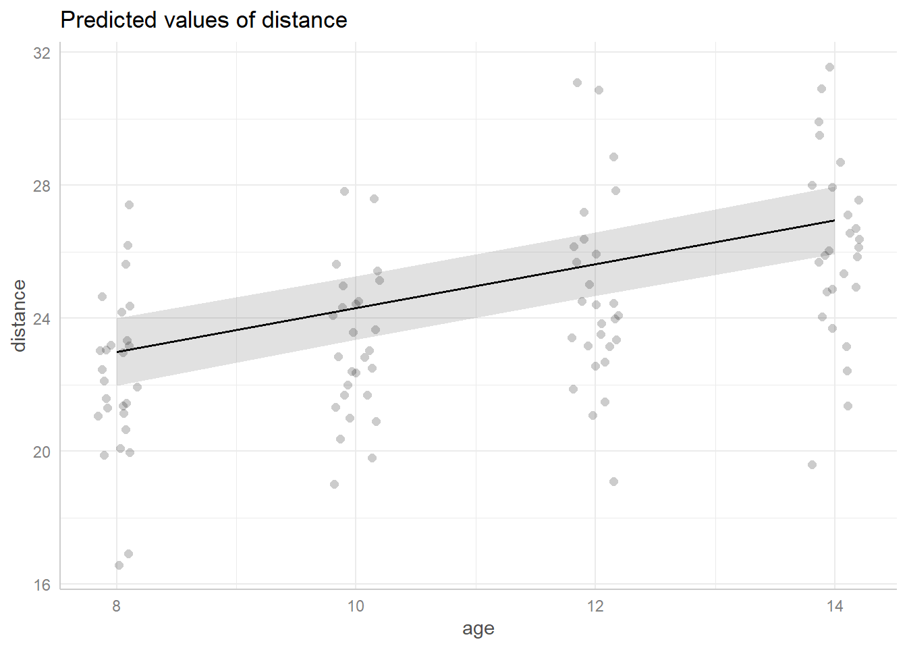
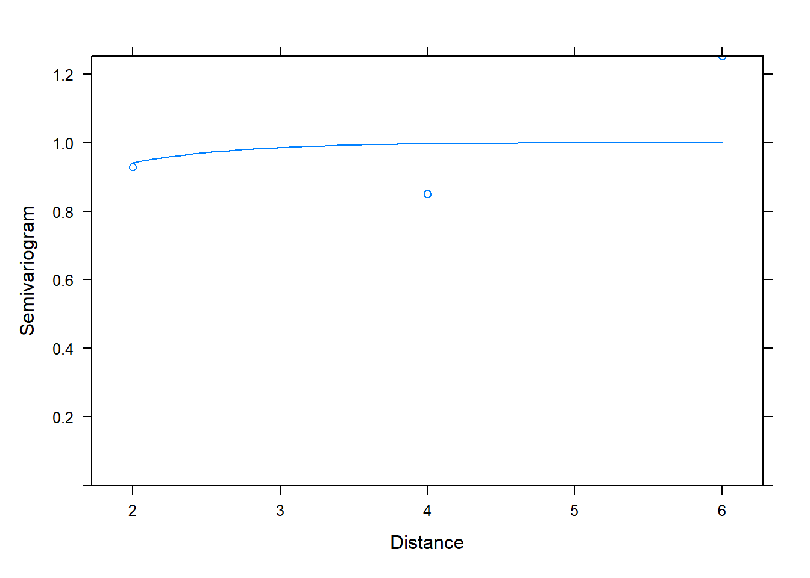
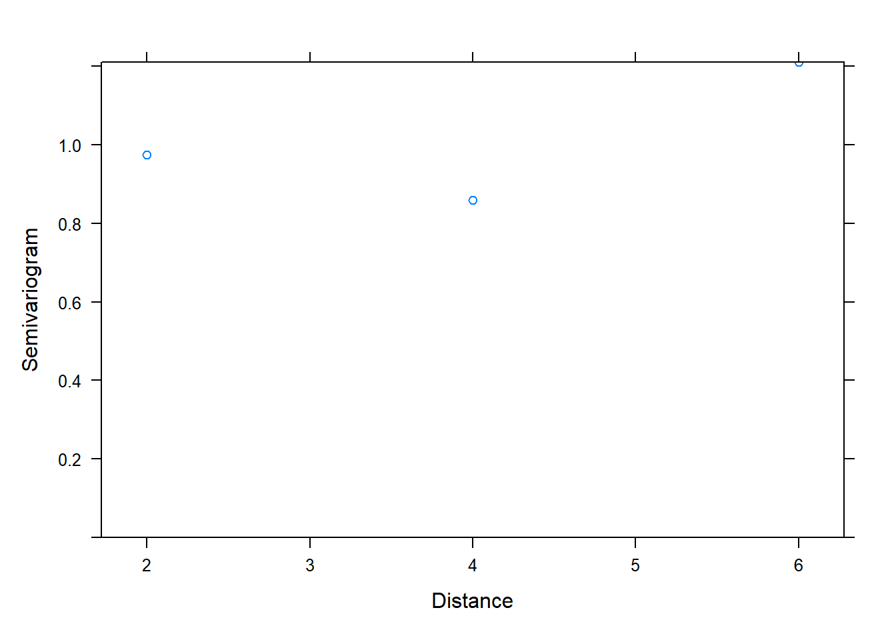
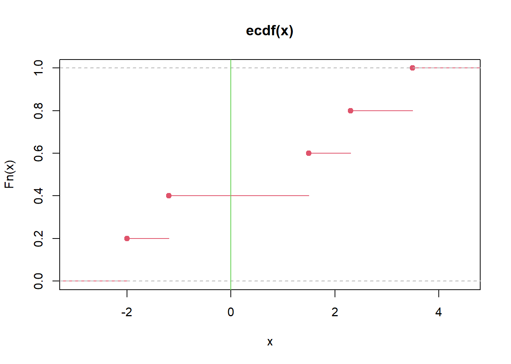

7 Probability
Probability is the mathematical language for uncertainty. In statistics, we use probability to formalize how likely events are, how random quantities behave, and how sampling variability arises. This chapter is organized in two parts:
- Probability basics: the conceptual and mathematical foundation (events, rules, distributions, expectation).
- Probability R practice: simulation and computation in R, which often provides intuition even when the exact analytic solution is difficult.
A key theme is that probability is not only “abstract theory”—it directly supports the logic of estimation, confidence intervals, and hypothesis testing.
7.1 Probability basics
7.1.1 Events
An outcome is a single possible result of a random experiment.
An event is a set (collection) of outcomes.
The sample space (outcome space) is the set of all possible outcomes.
Example: two dice.
- Outcome: \((1,6)\) means die 1 shows 1 and die 2 shows 6.
- Sample space: all 36 ordered pairs \((i,j)\) where \(i,j\in\{1,2,3,4,5,6\}\).
- Event example: “both dice show the same face” is
\[E=\{(1,1),(2,2),(3,3),(4,4),(5,5),(6,6)\}.\]
In practice: - We use events when we talk about “probability that something happens.” - We use random variables when we want a numeric summary of outcomes, such as “sum of two dice.”
A common confusion worth separating early (even if we do not fully formalize it here):
- Independence of events: statements about sets, e.g., \(A\) independent of \(B\).
- Independence of random variables: statements about distributions, e.g., \(X\) independent of \(Y\).
- Independence of observations: a modeling assumption in data analysis, often violated in clustered/longitudinal data (which motivates mixed models, GEE, etc.).
7.1.2 Probability formulas
7.1.2.1 Discrete case
For equally likely outcomes, the probability of an event is:
\[ P(E) = \frac{\text{number of outcomes in }E}{\text{number of possible outcomes}}. \]
This definition is intuitive but has two important limitations:
- It requires that outcomes be equally likely.
- It is mainly useful when the sample space is countable and not too large.
When outcomes are not equally likely, we assign each outcome \(\omega\) a probability \(P(\omega)\), and then:
\[ P(E)=\sum_{\omega\in E}P(\omega). \]
7.1.2.2 Continuous case
For a continuous random variable \(X\) with density \(f(x)\):
\[ P(a \le X \le b)=\int_a^b f(x)\,dx. \]
This expresses the fundamental idea:
- Probabilities of continuous random variables are areas under a curve.
A crucial consequence:
\[ P(X=k)=0 \]
for any fixed value \(k\) when \(X\) is continuous.
So the statement “\(X=3\)” has probability zero, but intervals like “\(2.9 \le X \le 3.1\)” have positive probability.
7.1.3 Calculation of probability (operations)
Most probability calculations are built from three core operations:
- Union (“A or B”)
- Intersection (“A and B”)
- Conditioning (“A given B”)
7.1.3.1 Union probability (addition rule)
\[ \begin{aligned} P(A \cup B) &= P(A)+P(B)-P(A \cap B),\\ P(A \cup B) &= P(A)+P(B)\quad \text{if }A\text{ and }B\text{ are mutually exclusive.} \end{aligned} \]
Interpretation: - We subtract \(P(A\cap B)\) because it is counted twice when adding \(P(A)+P(B)\). - “Mutually exclusive” means \(A\cap B=\emptyset\) (they cannot happen together).
7.1.3.2 Joint probability (multiplication rule)
\[ \begin{aligned} P(A \cap B) &= P(A\mid B)P(B)=P(B\mid A)P(A),\\ P(A \cap B) &= P(A)P(B)\quad \text{if }A\text{ and }B\text{ are independent.} \end{aligned} \]
Interpretation: - Independence is a strong statement: knowing \(B\) does not change the probability of \(A\). - Many real-world problems are not independent, which is why conditional probability is central.
7.1.3.3 Marginal probability
A marginal probability is “standalone,” without conditioning:
\[ P(A)\quad \text{or}\quad P(B). \]
In multivariable settings, “marginal” also means summing/integrating out other variables.
7.1.3.4 Conditional probability
\[ P(A\mid B)=\dfrac{P(A \cap B)}{P(B)}. \]
Interpretation: - Restrict attention to the world where \(B\) happened, then measure how often \(A\) occurs inside that restricted world.
A short caution on wording:
- People sometimes say “p-values are conditional probabilities.”
This is only partly true. A p-value is a probability computed under the null model and conditional on the testing procedure (and sometimes on nuisance estimates). It is not the probability that the null hypothesis is true.
7.1.4 Bayes’s theorem
Bayes’s theorem is essentially a systematic way to reverse conditioning.
7.1.4.2 Bayes’s formula
For mutually exclusive and exhaustive events \(B_1,\ldots,B_n\):
\[ P(B_j\mid A)=\frac{P(A\mid B_j)P(B_j)}{P(A)}. \]
This shows that the posterior probability of a cause \(B_j\) after observing evidence \(A\) is proportional to:
- how likely the evidence is under the cause (\(P(A\mid B_j)\)), and
- how likely the cause was before seeing the evidence (\(P(B_j)\)).
7.1.5 Random variables and distribution functions
A random variable is a numerical function of the outcome of a random experiment. We use random variables because they let us summarize events numerically and apply algebra/calculus.
There are three major distribution functions:
- PMF (probability mass function) for discrete variables, e.g., binomial, Poisson.
- PDF (probability density function) for continuous variables, e.g., normal, exponential.
- CDF (cumulative distribution function) for both, defined by:
\[ F(x)=P(X\le x). \]
The CDF is universal: even when a PDF does not exist, the CDF still defines the distribution.
7.1.6 Probability distributions (joint, marginal, conditional)
For two discrete random variables \((X,Y)\), the joint distribution is:
\[ P(X=x_i, Y=y_j)=p_{ij},\quad i,j=1,2,\ldots \]
The marginal distribution of \(X\) is obtained by summing out \(Y\):
\[ P(X=x_i)=\sum_{j=1}^{\infty} p_{ij}=p_i. \]
The conditional distribution of \(Y\) given \(X=x_i\) is:
\[ P(Y=y_j\mid X=x_i)=\frac{p_{ij}}{p_i}. \]
This joint → marginal/conditional workflow is a general template used throughout statistics, including regression, Bayesian inference, and graphical models.
7.1.7 Conditional expectation
Conditional expectation is the expected value of a random variable under a conditional distribution. Intuitively, it is the “average of \(Y\) when we hold \(X\) fixed.”
Discrete form (conceptual structure):
\[ E(Y\mid X)=\sum_{y} y\cdot P(Y=y\mid X). \]
Continuous form:
\[ E(Y\mid X)=\int y\cdot f_{Y\mid X}(y\mid X)\,dy. \]
(Your notes use a sample-style indexing; the key conceptual point is: expectation is always “value times probability,” summed or integrated over the support.)
Unconditional expectation (discrete):
\[ \mu=E(X)=\sum x_i f(x_i). \]
Practical connection:
- In regression, \(E(Y\mid X=x)\) is modeled as a function of \(x\).
- Thus conditional expectation becomes the theoretical basis for regression modeling.
7.1.8 Conditional variance
Variance measures dispersion around the mean:
\[ \sigma^2=\mathrm{Var}(X)=\sum (x_i-\mu)^2 f(x_i). \]
Conditional variance is defined similarly but under the conditional distribution:
\[ \mathrm{Var}(Y\mid X)=E\left((Y-E(Y\mid X))^2\mid X\right). \]
Practical connection: - Many models (e.g., linear regression, GLMs, mixed models) can be viewed as specifying a mean structure \(E(Y\mid X)\) and a variance/covariance structure \(\mathrm{Var}(Y\mid X)\).
7.1.9 Sampling
In statistics, we use a sample to learn about a population. A sample statistic (e.g., \(\bar X\)) varies from sample to sample, and that variability is the foundation of uncertainty quantification.
The error from using statistics to estimate parameters is summarized by the standard error.
Standard error of the sample mean under i.i.d. sampling:
\[ SD(\bar{X})=SE(\bar{X})=\dfrac{\sigma}{\sqrt{n}}. \]
This formula is simple, but it encodes important assumptions: - independent observations, - common variance \(\sigma^2\), - finite variance.
When these assumptions fail (e.g., correlation), we must modify the standard error (again connecting back to covariance modeling).
7.1.10 Central limit theorem and law of large numbers
Law of large numbers (LLN): sample averages converge to the population mean as \(n\) grows.
Central limit theorem (CLT): for large \(n\), the sampling distribution of \(\bar X\) is approximately normal:
\[ \bar X \approx N\left(\mu,\frac{\sigma^2}{n}\right), \]
even if the population is not normal (under mild conditions).
This approximation is the backbone of classical confidence intervals and many hypothesis tests.
7.1.11 Confidence interval
A confidence interval has the general form:
\[ \text{point estimate} \pm M\times \widehat{SE}(\text{estimate}). \]
The multiplier \(M\) depends on the desired confidence level and the sampling distribution (z, t, etc.). The tradeoff is fundamental:
- Higher confidence → larger \(M\) → wider interval → lower precision.
For a proportion, the common large-sample margin of error is:
\[ E=z_{\alpha/2}\sqrt{\dfrac{\hat{p}(1-\hat{p})}{n}}. \]
7.1.12 Introduction to hypothesis testing
Hypothesis testing is a structured decision framework:
- Set up hypotheses and choose significance level \(\alpha\).
- Construct and calculate a test statistic.
- Compute a p-value under the null model.
- Make a decision and state a conclusion in context.
In many common tests, the p-value is computed using a known reference distribution (normal, t, chi-square, F). In more complex problems, simulation becomes a practical alternative.
7.2 Probability R practice
R lets us compute probabilities, simulate random experiments, and visualize distributions. Simulation is especially valuable when:
- exact probability calculations are complicated,
- or the analytic form is unknown.
Pros: - minimal probability theory required, - often intuitive and flexible.
Cons: - simulation gives approximate answers, - accuracy depends on the number of simulations and computational cost.
7.2.1 Integrate
Integration is how we compute probabilities for continuous random variables and expectations of functions.
## [1] 2.666667Interpretation: - This returns \(\int_0^2 x^2\,dx\), illustrating numerical integration in R. - For probability, we typically integrate a density over an interval.
7.2.2 Derivation (symbolic differentiation)
deriv() can generate derivatives of expressions, useful for sensitivity checks or simple symbolic gradients.
## [1] 16
## attr(,"gradient")
## x y
## [1,] 16 13Interpretation: - This computes partial derivatives with respect to \(x\) and \(y\) at \((1,2)\). - In statistics, derivatives appear in likelihood maximization, gradient-based optimization, and delta-method approximations.
7.2.3 Create random variables with specific distributions
R provides standard “distribution functions,” typically in four families:
d*density/pmf: \(f(x)\)
p*CDF: \(P(X\le x)\)
q*quantile: inverse CDF
r*random generation
## [1] 0.3989423## [1] 0.8997274## [1] 1.644854## [1] -0.455364836 -0.521148357 -0.494445354 0.749817888 0.141561597
## [6] 0.121387509 -2.177944382 0.757740713 0.375375011 -0.006467571The naming convention is consistent across many distributions (normal, t, chi-square, Poisson, binomial, exponential, etc.), which makes R especially convenient for probability practice.
7.2.3.1 Using covariance matrix to generate multivariate normal variables
The multivariate normal is a cornerstone in statistics because linear combinations remain normal and because many estimators have asymptotic normality.
| -0.2665594 | -0.0774868 |
| 2.7866828 | 0.7426437 |
| 1.2282546 | 1.3251634 |
| -0.8505176 | 0.5162904 |
| -0.0126082 | 0.7838208 |
| -0.7243446 | 0.0724909 |
| -8.3928470 | -1.6886123 |
| -1.1046392 | 0.5370612 |
| 1.3658650 | 1.1767135 |
| -1.9054060 | -1.2319559 |
| -0.8789834 | 0.3941995 |
| -6.0085862 | -2.1536238 |
| 0.8189866 | 1.3600976 |
| 4.7487759 | 0.7383102 |
| 0.0129275 | -0.0814486 |
| -0.4798287 | 0.0700314 |
| 1.8806579 | 0.6530998 |
| 4.6464324 | 0.3021236 |
| 7.9990662 | 1.1896375 |
| -2.8460051 | 0.1155733 |
Interpretation:
- Sigma encodes variances (diagonal) and covariance (off-diagonal).
- Covariance controls correlation and joint behavior, which becomes central in multivariate inference and mixed models.
7.2.4 Probability function examples
Here we compute common tail probabilities and quantiles used in hypothesis testing.
## [1] 0.9750021## [1] -1.959964## [1] 0.05004352## [1] 0.0501Interpretation:
- pnorm(1.96) is the classic 97.5th percentile check for \(N(0,1)\).
- qnorm(0.025) gives the 2.5th percentile.
- pchisq(3.84,1,lower.tail=F) computes the upper-tail probability beyond the chi-square cutoff 3.84 (often used in 1-df likelihood ratio tests).
- The final line approximates the same tail probability via simulation, reinforcing that probability can be estimated empirically.
7.2.5 Vector and operations
Probability simulation relies heavily on vectorization.
## [1] 1 3 5 7 9## [1] 1 2 3 1 2 3 1 2 3 1 2 3 1 2 3 1 2 3## [1] 1 1 1 1 1 1 2 2 2 2 2 2 3 3 3 3 3 3## [1] 2 3 4 2 3 4 3 4 5 3 4 5 4 5 6 4 5 6## [1] 0 1 2 0 1 2 -1 0 1 -1 0 1 -2 -1 0 -2 -1 0## [1] 1 2 3 1 2 3 2 4 6 2 4 6 3 6 9 3 6 9## [1] 1.0000000 2.0000000 3.0000000 1.0000000 2.0000000 3.0000000 0.5000000
## [8] 1.0000000 1.5000000 0.5000000 1.0000000 1.5000000 0.3333333 0.6666667
## [15] 1.0000000 0.3333333 0.6666667 1.0000000| 72 |
Notes:
- Elementwise operations (+,-,*,/) are the default.
- %*% is matrix multiplication; for vectors it yields an inner product when dimensions align.
7.2.6 Select and substitute elements of vector
Subsetting is essential for event counting in simulations.
## [1] 2 3## [1] 2 3 1 2 3 1 2 3 1 2 3 1 2 3 1 2 3## [1] 3 3 3 3 3 3## [1] 2 2 2 2 2 2## [1] 1.0 0.5 3.0 1.0 0.5 3.0 1.0 0.5 3.0 1.0 0.5 3.0 1.0 0.5 3.0 1.0 0.5 3.0Interpretation: - Logical conditions create event indicators. - Assignment replaces selected outcomes, which is useful for recoding or constructing piecewise variables.
7.2.7 Matrix and operations
Matrices are used for multivariate distributions and linear algebra operations in estimation.
| 1 | 3 | 5 | 7 | 9 |
| 2 | 4 | 6 | 8 | 10 |
| 1 | 6 |
| 2 | 7 |
| 3 | 8 |
| 4 | 9 |
| 5 | 10 |
## [1] 13 16 19## [1] 15 16 17| 12 | 15 | 18 |
| 14 | 17 | 20 |
| 12 | 18 |
| 13 | 19 |
| 14 | 20 |
| 12 | 15 | 18 |
| 21 | 16 | 19 |
| 14 | 17 | 20 |
7.2.8 Compute inverse, determinant and eigenvalues
These operations appear in multivariate normal densities, GLS estimators, and covariance decompositions.
| -1.9775281 | 3.471910 | -1.6179775 |
| 0.7977528 | -1.247191 | 0.5617978 |
| 0.5000000 | -1.000000 | 0.5000000 |
## [1] -178| 352 | -618 | 288 |
| -142 | 222 | -100 |
| -89 | 178 | -89 |
| 11 | 21 | 31 |
| 21 | 32 | 43 |
| 12 | 32 | 54 |
## eigen() decomposition
## $values
## [1] 91.6892193 5.6541299 -0.3433491
##
## $vectors
## [,1] [,2] [,3]
## [1,] -0.2573423 -0.7530908 -0.9049786
## [2,] -0.5253459 -0.1712782 0.3538153
## [3,] -0.8110405 0.6352306 0.2362806Interpretation:
- solve(a) computes \(a^{-1}\) (if invertible).
- det(a) is used in densities and volume scaling.
- eigen(a) decomposes into eigenvalues/eigenvectors (useful for checking positive definiteness of covariance matrices).
7.2.9 Dataframe
Data frames are the standard structure for statistical data in R.
name<-c('A','B','C')
chinese<-c(92,96,95)
math<-c(86, 85, 92)
score<-data.frame(name, chinese, math)
score| name | chinese | math |
|---|---|---|
| A | 92 | 86 |
| B | 96 | 85 |
| C | 95 | 92 |
| chinese |
|---|
| 92 |
| 96 |
| 95 |
## [1] 86 85 927.2.10 Solve problems using simulation
Simulation approximates probabilities by repeated random experiments, using:
\[ P(E)\approx \frac{\#\{\text{simulations where }E\text{ occurs}\}}{\text{number of simulations}}. \]
7.2.10.1 for loop
sim<-10000
p<-numeric(sim)
# numeric=NULL
for (i in 1:sim){
p[i]<- abs(mean(rnorm(10,20,sqrt(3)))-mean(rnorm(15,20,sqrt(3))))<0.1
}
mean(p)## [1] 0.1114Interpretation:
- In each simulation, we generate two samples from the same normal distribution and compare their sample means.
- The event is “absolute difference in means < 0.1.”
- mean(p) estimates the probability of that event.
7.2.10.2 using replicate
## [1] 0.109replicate() is cleaner and less error-prone for repeated simulations. It is often a good default unless performance constraints require custom vectorization.
7.2.10.3 using apply function (vectorized simulation)
| 18.70574 | 20.88733 | 17.52812 | 19.56535 | 17.73622 | 21.98701 | 20.00801 | 21.14956 | 22.81945 | 18.47995 | 21.35431 | 20.90751 | 21.31785 | 23.92822 | 20.58894 | 18.71456 | 19.69867 | 21.61542 | 19.10213 | 18.89764 | 18.36881 | 20.89675 | 23.82558 | 21.33796 | 20.13462 |
| 20.11965 | 19.79799 | 23.63198 | 19.88155 | 18.89218 | 22.20987 | 18.73646 | 20.44873 | 22.57918 | 18.58609 | 20.66191 | 18.30840 | 20.18984 | 21.29121 | 18.29128 | 19.06406 | 23.94727 | 19.63847 | 17.29944 | 18.97062 | 22.34136 | 21.76254 | 21.32133 | 19.77645 | 19.46760 |
| 22.15332 | 19.14180 | 19.91843 | 19.67503 | 19.03136 | 19.83104 | 20.90498 | 18.66252 | 22.32577 | 20.74567 | 19.39415 | 21.46328 | 22.40127 | 20.40425 | 16.83219 | 20.48671 | 18.26579 | 19.27627 | 19.42452 | 19.40516 | 20.41231 | 19.07215 | 17.95481 | 20.50409 | 21.01829 |
| 21.26067 | 19.10844 | 20.10449 | 20.61276 | 21.30556 | 18.91464 | 16.12576 | 20.33453 | 18.42996 | 19.09259 | 23.13648 | 20.61350 | 18.65005 | 18.43049 | 18.29093 | 20.94691 | 18.36321 | 22.23422 | 20.81836 | 18.44632 | 21.25736 | 19.29372 | 18.62801 | 21.28730 | 21.01738 |
| 20.05354 | 19.70608 | 20.30916 | 19.74466 | 22.21281 | 18.40272 | 19.52576 | 22.23956 | 19.52812 | 21.71667 | 19.63384 | 22.08427 | 19.09510 | 18.11768 | 22.50618 | 19.55186 | 18.74422 | 21.38810 | 19.84704 | 18.29330 | 21.27049 | 20.16627 | 16.88002 | 23.07446 | 19.72053 |
| 20.49934 | 18.78863 | 16.07264 | 20.20901 | 19.21209 | 20.36903 | 21.74771 | 17.90861 | 21.47081 | 19.73442 | 21.15830 | 20.55732 | 17.24140 | 19.50684 | 20.92777 | 19.30014 | 22.93655 | 22.65659 | 19.34171 | 21.30277 | 20.29218 | 20.28845 | 19.63053 | 20.84432 | 18.22206 |
## [1] 0.8878Interpretation: - This creates 10,000 simulated experiments at once. - Each row is one experiment with 25 observations; the first 10 and last 15 form two groups. - Vectorization often improves speed and clarity when structured carefully.
7.2.10.4 using probability method
## [1] 0.1124629This line attempts an analytic shortcut: if the difference of two independent sample means is normal with known variance, we can compute the probability directly using the normal CDF. This is a good example of how simulation and theory complement each other: simulation suggests the answer, and probability theory can sometimes confirm it exactly.
7.2.11 Permutations and combinations
Combinatorics supports counting arguments for discrete probability.
## [1] 45## [1] 3628800## [1] 3628800Interpretation:
- choose(n,k) computes \(\binom{n}{k}\).
- factorial(10) equals \(10!\).
- prod(1:10) is another way to compute \(10!\) numerically.
7.2.12 Search value position in vector
These are practical utilities for data cleaning and simulation summaries.
## [1] 5## [1] 20## [1] 1 2 3 5 0 9## [1] 6## [1] 0## [1] 9## [1] FALSE7.2.13 Solve directly and optimize
Finding roots and optimizing functions are common in probability (e.g., solving for quantiles, MLE equations).
## [1] -0.7034781## [1] -0.703479Interpretation:
- uniroot() solves \(f(x)=0\) in a range.
- optimize() finds the minimum of a function in a range, which can be used when the root is hard to bracket.
7.2.14 Calculate probability using simulation method
7.2.14.1 Example: select 3 numbers out of 1:10, sum equals 9
badge<-1:10
sim<-10000
p<-numeric(sim)
for (i in 1:sim){ a<-sample(badge,3,replace=F)
p[i]<-sum(a)==9 }
mean(p)## [1] 0.0247Interpretation: - The probability is estimated by the fraction of times the sampled triple sums to 9. - Because sampling is without replacement, the outcome space is combinations (unordered) but simulation avoids manual counting.
7.2.14.2 Example: tangyuan flavors
This simulation checks whether each block of 6 draws contains all three flavors. The logic uses unique() counts to represent the event “all flavors present.”
Tangyuan<-c(rep('A',8),rep('B',8),rep('C',8))
sim<-10000
p<-numeric(sim)
# how to do it according to the condition
for (i in 1:sim){
a<-sample(Tangyuan,24,replace=F)
p[i]<-(length(unique(a[1:6]))==3)&(length(unique(a[7:12]))==3)&(length(unique(a[13:18]))==3)&(length(unique(a[19:24]))==3)
}
mean(p)## [1] 0.4966Interpretation: - Each chunk represents a “serving” or “round.” - The event is that each serving includes all three flavors at least once.
7.2.14.3 Example: two boxes, same color
box1<-c(rep('white',5), rep("black",11), rep('red',8))
box2<-c(rep('white',10), rep("black",8), rep('red',6))
sim<-10000
p<-numeric(sim)
for (i in 1:sim){
a<-sample(box1, 1)
b<-sample(box2, 1)
p[i]<- a==b
}
mean(p)## [1] 0.3258Interpretation: - This approximates \(P(\text{color}_1=\text{color}_2)\). - A quick analytic approach would sum products of marginal probabilities by color; simulation provides a fast check.
7.2.14.4 Example: sampling with replacement, both white
box<-c(rep("white",4),rep("red",2))
sim<-10000
t<-numeric(sim)
for (i in 1:sim){
a<-sample(box, 2 ,replace=T)
# there are two white balls
t[i]<-length(a[a=="white"])==2
}
mean(t)## [1] 0.4501Interpretation: - With replacement, the draws are independent. - This event probability is approximately \((4/6)^2\); simulation verifies it.
7.2.15 Discrete random variable
7.2.15.1 Example: binomial (guessing answers)
If each question has 4 options and you guess randomly, the number correct out of 5 follows \(X\sim\mathrm{Bin}(5,1/4)\).

Interpretation: - The plot is a PMF: it shows \(P(X=k)\) as vertical bars.
7.2.15.2 Example: most likely number of hits
If hit probability is 0.02 per trial and there are 400 trials, the number of hits is \(X\sim\mathrm{Bin}(400,0.02)\), and the “most likely” value is the mode (the \(k\) with maximum PMF).


## [1] 0.1406443## [1] 0.1410031Interpretation:
- The zoomed-in plot helps locate the mass near the mean \(np=8\).
- Comparing dbinom(7,...) and dbinom(8,...) checks which value is more likely.
7.2.16 Exponent distribution
If lifetime is exponential with rate \(\lambda=1/2000\), then:
\[ P(X>1000)=\int_{1000}^{\infty}\lambda e^{-\lambda x}\,dx = e^{-\lambda\cdot 1000}. \]
Your code computes this probability using integration, the CDF, and simulation.
## [1] 0.6065307## [1] 0.6065307## [1] 0.6065307## [1] 0.6035Interpretation:
- 1-pexp(...) is usually the cleanest way.
- Simulation provides a numerical check and builds intuition about tail probabilities.
7.2.17 Normal distribution plot
Normal density plots are helpful for understanding how mean and standard deviation control shape.
7.2.17.1 Changing the standard deviation
x<-seq(-3,3,0.01)
plot(x, dnorm(x,mean=0, sd=2),type="l",xlab="x",ylab = "f(x)", col=1,lwd=2,ylim=c(0,1)) #density function
lines(x, dnorm(x,mean=0, sd=1),lty=2, col=2,lwd=2)
lines(x, dnorm(x,mean=0, sd=0.5), lty=3,col=3,lwd=2)
exbeta<-c(expression(paste(mu,"=0,", sigma,"=2")), expression(paste(mu,"=0,",sigma,"=1")), expression(paste(mu,"=0,", sigma,"=0.5")))
legend("topright", exbeta, lty = c(1, 2,3),col=c(1,2,3),lwd=2)
Interpretation: - Larger \(\sigma\) spreads the curve and lowers the peak. - Smaller \(\sigma\) concentrates mass near the mean and increases the peak.
7.2.17.2 Shifting the mean
x<-seq(-3,3,0.01)
plot(x, dnorm(x,mean=-1, sd=1),type="l",xlab="x",ylab = "f(x)", col=1,lwd=2,ylim=c(0,0.6))
lines(x, dnorm(x,mean=0, sd=1),lty=2, col=2,lwd=2)
lines(x, dnorm(x,mean=1, sd=1), lty=3,col=3,lwd=2)
exbeta<-c(expression(paste(mu,"=-1,", sigma,"=1")), expression(paste(mu,"=0,",sigma,"=1")), expression(paste(mu,"=1,", sigma,"=1")))
legend("topright", exbeta, lty = c(1, 2,3),col=c(1,2,3),lwd=2)
Interpretation: - Changing \(\mu\) shifts the curve left/right without changing shape (when \(\sigma\) is fixed).
7.2.17.3 Solving for sigma numerically
This code finds a \(\sigma\) such that:
\[ P(120\le X\le 200) < 0.80 \quad \text{for }X\sim N(160,\sigma^2), \]
using iterative search.
sigma<-1
repeat{
sigma<-sigma+0.01
if (pnorm(200,160,sigma)-pnorm(120,160,sigma)<0.80) break
}
sigma## [1] 31.22# alternative
sigma<-1
while( pnorm(200,160,sigma)-pnorm(120,160,sigma)>=0.80){sigma<-sigma+0.01}
sigma## [1] 31.22Interpretation:
- This is a simple numerical method (incremental search).
- In more advanced work, you might solve it using uniroot().
7.2.18 Distribution of random variable function
7.2.18.1 Discrete transformation
Here we sample from a discrete distribution with weights, then examine the distributions of transformations \(X^2\) and \(2X\).
x<-c(-1,0,1,2,2.5)
weight<-c(0.2,0.1,0.1,0.3,0.3)
toss<-sample(x,10000,replace=T,weight)
table(toss^2)/length(toss^2)| 0 | 1 | 4 | 6.25 |
|---|---|---|---|
| 0.1011 | 0.3047 | 0.2949 | 0.2993 |
| -2 | 0 | 2 | 4 | 5 |
|---|---|---|---|---|
| 0.2018 | 0.1011 | 0.1029 | 0.2949 | 0.2993 |
Interpretation: - Transformations can change the support and probabilities. - This is a simulation-based way to study the distribution of \(g(X)\).
7.2.18.2 Continuous density via simulation
This code compares an estimated density to a known “truth” piecewise density.
x <- seq(0,5,0.01)
truth<-rep(0,length(x))
truth[0<=x&x<1]<-2/3
truth[1<=x&x<2]<-1/3
plot(density(abs(runif(1000000,-1,2))),main=NA, ylim=c(0,1),lwd=3,lty=3)
lines(x,truth,col="red",lwd=2)
legend("topright",c("True Density","Estimated Density"), col=c("red","black"),lwd=3,lty=c(1,3))
Interpretation: - Kernel density estimation approximates a PDF from simulated samples. - This is a common strategy when the analytic density of a transformed variable is difficult to derive.
7.2.19 Joint and marginal probability (simulation approach)
This example constructs a joint distribution by simulation: choose \(X\) uniformly from 1:4, then choose \(Y\) uniformly from 1:\(X\).
p<-function(x,y) {
sim<-10000
t<-numeric(sim)
for (i in 1:sim) {
a<-sample(1:4,1)
b<-sample(1:a,1)
t[i]<-(a==x)&(b==y) }
mean(t)
}
PF<-matrix(0,4,4)
for (i in 1:4) {
for (j in 1:4) {
PF[i,j]<-p(i, j) } }
PF| 0.2610 | 0.0000 | 0.0000 | 0.0000 |
| 0.1260 | 0.1262 | 0.0000 | 0.0000 |
| 0.0858 | 0.0815 | 0.0847 | 0.0000 |
| 0.0617 | 0.0665 | 0.0648 | 0.0619 |
## [1] 0.2610 0.2522 0.2520 0.2549## [1] 0.5345 0.2742 0.1495 0.0619Interpretation:
- PF approximates the joint PMF table \(p_{ij}\).
- Row sums approximate the marginal distribution of \(X\).
- Column sums approximate the marginal distribution of \(Y\).
This is a useful template: if you can simulate from the joint mechanism, you can estimate joint/marginal/conditional distributions numerically.
7.2.20 Multiple random variables: derived distributions
Here we simulate \((X,Y)\), then compute the distributions of several derived variables:
- \(Z_1=X+Y\)
- \(Z_2=XY\)
- \(Z_3=\max(X,Y)\)
- \(Z_4=X/Y\)
x<-sample(1:4, 10000, replace=T, prob=c(1/4, 1/4, 1/4, 1/4))
y<-numeric(10000)
for(i in 1:10000) {
if(x[i]==1) {y[i]<-sample(1:4,1,replace=T, prob=c(1,0,0,0))}
if(x[i]==2) {y[i]<-sample(1:4,1,replace=T, prob=c(1/2,1/2,0,0))}
if(x[i]==3) {y[i]<-sample(1:4,1,replace=T, prob=c(1/3,1/3,1/3,0))}
if(x[i]==4) {y[i]<-sample(1:4,1,replace=T, prob=c(1/4,1/4,1/4,1/4))}
}
z1<-x+y
table(z1)/length(z1)| 2 | 3 | 4 | 5 | 6 | 7 | 8 |
|---|---|---|---|---|---|---|
| 0.2461 | 0.126 | 0.2071 | 0.1475 | 0.1481 | 0.061 | 0.0642 |
| 1 | 2 | 3 | 4 | 6 | 8 | 9 | 12 | 16 |
|---|---|---|---|---|---|---|---|---|
| 0.2461 | 0.126 | 0.0826 | 0.1846 | 0.0874 | 0.0615 | 0.0866 | 0.061 | 0.0642 |
| 1 | 2 | 3 | 4 |
|---|---|---|---|
| 0.2461 | 0.2505 | 0.2566 | 0.2468 |
| 1 | 1.33333333333333 | 1.5 | 2 | 3 | 4 |
|---|---|---|---|---|---|
| 0.5214 | 0.061 | 0.0874 | 0.1875 | 0.0826 | 0.0601 |
Interpretation: - This is a direct demonstration that even if \((X,Y)\) are discrete with a known mechanism, the distribution of \(g(X,Y)\) may be nontrivial. - Simulation gives a quick empirical picture of the resulting distribution.
7.2.21 Sum of two independent normal variables
If \(X\sim N(0,1)\) and \(Y\sim N(0,1)\) independent, then:
\[ Z=X+Y \sim N(0,2). \]
This code overlays simulated density with the true \(N(0,2)\) density.
Z<-function(n){
x<-seq(-4,4,0.01)
truth<-dnorm(x,0,sqrt(2))
plot(density(rnorm(n)+rnorm(n)),main="Density Estimate of the Normal Addition Model",ylim=c(0,0.4),lwd=2,lty=2)
lines(x,truth,col="red",lwd=2)
legend("topright",c("True","Estimated"),col=c("red","black"),lwd=2,lty=c(1,2))
}
Z(10000)
Interpretation: - This is an important pattern: sums of independent normals remain normal, and variances add. - Many asymptotic results in statistics rely on this stability.
7.2.22 Generate a circle using simulated random dots
Monte Carlo geometry: estimate regions defined by inequalities.
Circle region:
\[ D=\{(x,y): x^2+y^2\le 1\}. \]

Oval (ellipse) region:
\[ \frac{x^2}{a^2}+\frac{y^2}{b^2}\le 1. \]
a<-3
b<-1
x<-runif(10000,-a,a)
y<-runif(10000,-b,b)
x1<-x[x^2/a^2+y^2/b^2<=1]
y1<-y[x^2/a^2+y^2/b^2<=1]
plot(x1,y1,col=3)
Interpretation: - This technique generalizes to Monte Carlo integration: “probability = area/volume proportion.”
7.2.23 Expectation (simulation)
Expectation is the long-run average outcome. Simulation estimates it naturally by sample means.
Example: piecewise payoff depending on an exponential random variable.
sim<-10000
t<-numeric(sim)
for (i in 1:sim) {
Y<-1500
X<-rexp(1,rate=1/10)
Y[1<X&X<=2]<-2000
Y[2<X&X<=3]<-2500
Y[3<X]<-3000
t[i]<-Y
}
mean(t)## [1] 2727.5Interpretation: - This is a practical way to compute \(E(Y)\) when \(Y\) is a complicated function of a random input. - Analytically, you would integrate the payoff function against the density of \(X\).
7.2.24 Central Limit Theorem (simulation)
7.2.24.1 CLT for exponential distribution
This code simulates the sampling distribution of \(\bar X\) for \(X\sim\mathrm{Exp}(\lambda)\), and overlays the normal approximation:
\[ \bar X \approx N\left(\mu,\frac{\sigma^2}{n}\right), \]
with \(\mu=1/\lambda\) and \(\sigma=1/\lambda\) for the exponential.
####Central Limit Theorem for Expotential distribution
layout(matrix(c(1,3,2,4 ),ncol=2))
r<-1000
lambda<-1/100
for (n in c(1,5,10,30)){
mu<-1/lambda
xbar<-numeric(r)
sxbar<-1/(sqrt(n)*lambda)
for(i in 1:r){
xbar[i]<-mean(rexp(n,rate=lambda))
}
hist(xbar,prob=T,main=paste('SampDist.Xbar,n=',n),col=gray(.8))
Npdf<-dnorm(seq(mu-3*sxbar,mu+3*sxbar,0.01),mu,sxbar)
lines(seq(mu-3*sxbar,mu+3*sxbar,0.01),Npdf,lty=2,col=2)
box()
}
Interpretation: - For small \(n\), the distribution is skewed (reflecting the exponential). - As \(n\) increases, the histogram becomes closer to normal.
7.2.24.2 CLT for uniform distribution
Uniform(0,10) has:
\[ \mu=5,\quad \sigma=\frac{10}{\sqrt{12}}. \]
The code repeats the same idea for a different population distribution.
#######The central limit theorem for uniform distribution
layout(matrix(c(1,3,2,4),ncol=2))
r<-10000
mu<-5
sigma<-10/sqrt(12)
for (n in c(1,5,10,30)){
xbar<-numeric(r)
sxbar<-sigma/sqrt(n)
for (i in 1:r){
xbar[i]<-mean(runif(n,0,10))}
hist(xbar,prob=T,main=paste('SampDist.Xbar,n=',n),col=gray(0.8),ylim=c(0,1/(sqrt(1*pi)*sxbar)))
XX<-seq(mu-3*sxbar,mu+3*sxbar,0.01)
Npdf<-dnorm(XX,mu,sxbar)
lines(XX,Npdf,lty=2,col=2)
box()}
7.2.25 Law of large numbers
The law of large numbers says the running average converges to the expected value. For a discrete uniform sample from 1:10, the theoretical mean is 5.5.
N <- 5000
set.seed(123)
x <- sample(1:10, N, replace = T)
s <- cumsum(x)
r.avg <- s/(1:N)
options(scipen = 10)
plot(r.avg, ylim=c(1, 10), type = "l", xlab = "Observations"
,ylab = "Probability", lwd = 2)
lines(c(0,N), c(5.5,5.5),col="red", lwd = 2)
Interpretation: - Early averages fluctuate widely. - As \(N\) grows, the curve stabilizes around 5.5.
7.2.26 Empirical distribution function (ECDF)
The ECDF is the sample-based estimate of the CDF:
\[ \hat F(x)=\frac{1}{n}\sum_{i=1}^n I(X_i\le x). \]

Interpretation: - The ECDF jumps by \(1/n\) at each observed value. - It is a nonparametric summary of the distribution.
7.2.27 Probability of mean > 3 (simulation)
If three numbers are from \(N(2,9)\), then \(\bar X\) is normal, but simulation provides an easy estimate.
## [1] 0.2789Interpretation: - Each row is one sample of size 3. - We estimate \(P(\bar X>3)\) by counting the fraction of rows with mean > 3.
(Analytically, \(\bar X\sim N(2, 9/3)=N(2,3)\), so \(P(\bar X>3)=1-\Phi((3-2)/\sqrt{3})\).)
7.2.28 Maximum likelihood estimate (MLE)
MLE chooses parameters that maximize the likelihood (or log-likelihood). Your code estimates mean and variance for a normal model.
sample<-c(1.38, 3.96, -0.16, 8.12, 6.30, 2.61, -1.35, 0.03, 3.94, 1.11)
n<-length(sample)
muhat<-mean(sample)
sigsqhat<-sum((sample-muhat)^2)/n
muhat## [1] 2.594## [1] 8.133884loglike<-function(theta){
a<--n/2*log(2*pi)-n/2*log(theta[2])-sum((sample-theta[1])^2)/(2*theta[2])
return(-a)
}
optim(c(2,2),loglike,method="BFGS")$par## [1] 2.593942 8.130340Interpretation:
- The MLE for \(\mu\) is the sample mean.
- The MLE for \(\sigma^2\) divides by \(n\) (not \(n-1\)), which differs from the unbiased sample variance.
- optim() numerically confirms the closed-form solution, which is a useful habit when teaching likelihood.
7.2.29 t distribution, F distribution plots, and common distributions
This section overlays simulated and theoretical densities to reinforce the idea that distributions can be understood both analytically and empirically.
n<-30
x<-seq(-6,6,0.01)
y<-seq(-6,6,1)
Truth<-df(x,1,n)
plot(density(rt(10000,n)^2),main="PDF",ylim=c(0,1),lty=2,xlim=c(-6,6)) #simulation
lines(x, dt(x,n), col=3) #t dist
lines(x, dchisq(x,2), col=4) #chisq dist
lines(x,Truth,col=2) #f dist
abline (v=0 ,col=7)
points(y,dbinom(y, size=12, prob=0.2),col=1) #binomial dist
points(y,dpois(y, 6),col=2) #poisson dist
lines(y,dunif(-6:6,min=-6,max=6 ),col=5) #uniform
Interpretation notes:
- rt(... )^2 produces a distribution related to F (because ratios of chi-squares define F, and \(t^2\) is a special case).
- Overlaying multiple distributions is primarily pedagogical: it builds intuition for how shapes differ (skew, tail heaviness, support).
Closing perspective
Probability is not an isolated topic; it is the foundation for:
- interpreting randomness and variation in real data,
- understanding why estimators fluctuate,
- quantifying uncertainty via standard errors and confidence intervals,
- and making principled decisions via hypothesis tests.
The R practice section emphasizes a pragmatic approach: - If you can simulate a mechanism, you can estimate probabilities and expectations. - When analytic solutions exist, simulation becomes a powerful way to validate them and build intuition.